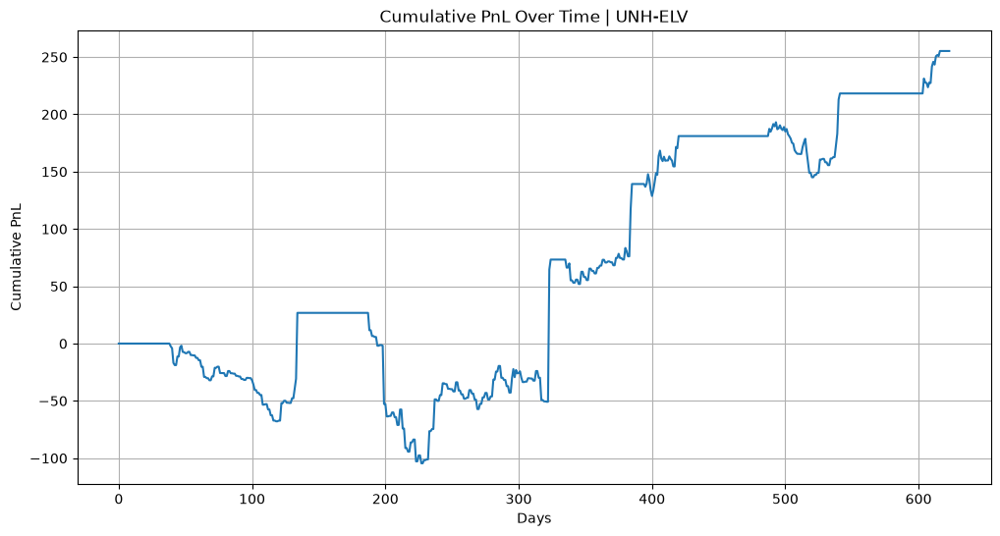
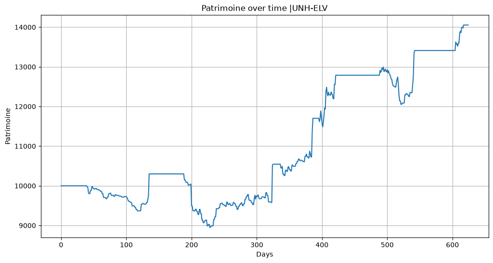
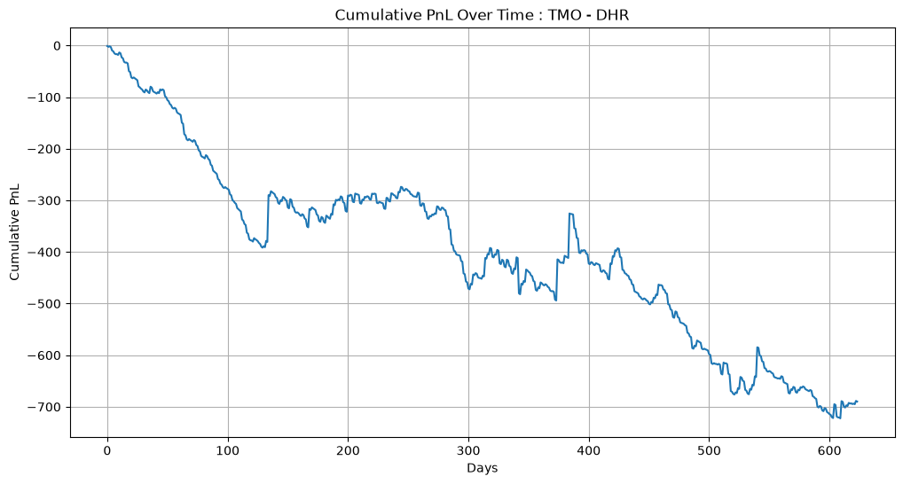

Statistical Arbitrage — Pair Trading with Ornstein-Uhlenbeck Modelling
Project Overview
This project implements a complete statistical arbitrage pipeline based on pair trading. The core hypothesis is that certain pairs of equities share a long-run equilibrium relationship (cointegration), and that temporary deviations from this equilibrium — captured by the spread — can be modelled as a mean-reverting stochastic process (Ornstein-Uhlenbeck). Trading signals are generated when the spread deviates significantly from its long-term mean, and positions are closed when it reverts.
The pipeline covers: economic pre-filtering of candidate pairs, battery of statistical tests for cointegration validation, spread construction via the Johansen procedure, OU parameter estimation by OLS regression, signal generation through a state-machine architecture, and out-of-sample backtesting with capital simulation.
Data Acquisition and Universe Definition
Candidate Pair Selection
The universe of candidate pairs is defined in pairs_universe.csv, a manually curated list of 30+ equity pairs selected on economic grounds. Each pair is justified by a fundamental relationship: direct competitors (KO/PEP, HD/LOW), same macro driver (CAT/DE, XOM/CVX), payment networks (V/MA), or sector exposure (LMT/RTX, UNH/ELV). This economic pre-filter ensures that any statistical relationship detected has a plausible structural explanation, reducing the risk of spurious cointegration.
Historical Data
Price data is downloaded from Yahoo Finance via the yfinance library. The training period spans January 2010 to January 2024 (approximately 14 years of daily close prices). Data is cached locally in financial_datas.csv to avoid repeated downloads. A separate out-of-sample dataset covering January 2024 to July 2026 is stored in backtest_datas.csv for backtesting purposes. Missing values between tickers are handled by aligning on the intersection of available dates (dropna on the concatenated DataFrame).
Statistical Testing Pipeline
The cointegration verification is implemented in test_coint.py as a class Coint_verif that runs a battery of five sequential tests. Each test acts as a filter: if a pair fails any test, it is immediately rejected via a custom CointError exception. The method test_batterie() chains all tests in order.
Step 1: Integration Order Verification (ADF)
The first requirement for cointegration is that both price series are individually integrated of order 1, denoted I(1). This means the raw series is non-stationary, but its first difference is stationary. The implementation uses the Augmented Dickey-Fuller test from statsmodels:
- Test that the raw series fails to reject H₀ (unit root present) at the 5% level — confirming non-stationarity.
- Test that the first-differenced series rejects H₀ at the 5% level — confirming stationarity of returns.
Both conditions must hold for both assets in the pair. If either series is already stationary in levels, or if the first difference is not stationary, the pair is discarded.
Step 2: Spread Construction via Johansen
The hedge ratio and spread are estimated using the Johansen cointegration procedure (coint_johansen from statsmodels). This method solves a generalized eigenvalue problem on the VECM representation of the bivariate system. The implementation extracts the eigenvector associated with the largest eigenvalue, normalizes it so that the coefficient on the first asset equals 1, and constructs the spread as:
where v[1] is the normalized second component (typically negative, yielding spread = A − β·B). The Johansen approach is preferred over OLS because it is symmetric — the result does not depend on which variable is designated as dependent — and because it simultaneously provides a test of cointegration rank.
Step 3: Spread Stationarity Verification
Once the spread is constructed, its stationarity is verified through three independent tests, each with different null hypotheses and power characteristics:
| Test | H₀ | Rejection condition | Rationale |
|---|---|---|---|
| ADF | Unit root (non-stationary) | stat < critical value | Standard unit root test |
| KPSS | Stationary | stat > critical value | Complementary: tests opposite hypothesis |
| Phillips-Perron | Unit root (non-stationary) | stat < critical value | Robust to heteroscedasticity and serial correlation |
Using both ADF/PP (H₀: non-stationary) and KPSS (H₀: stationary) provides a confirmatory approach: the spread must simultaneously reject non-stationarity under ADF/PP and fail to reject stationarity under KPSS. This reduces the probability of Type I errors from any single test.
Step 4: Formal Cointegration Tests
Two formal cointegration tests validate the relationship:
- Engle-Granger: tests whether the residuals of the cointegrating regression have a unit root. The pair is rejected if the test statistic exceeds the critical value at 5%, or if the p-value exceeds 0.05.
- Johansen trace test: the trace statistic for rank r=0 must exceed the 95% critical value, rejecting the null of no cointegration relationship.
Step 5: Hurst Exponent
As a final confirmation of mean-reversion, the Hurst exponent is computed on the spread using the R/S (rescaled range) method via the hurst library. A Hurst exponent H < 0.5 indicates mean-reverting behaviour. H = 0.5 corresponds to a random walk, and H > 0.5 indicates trending behaviour. Pairs with H ≥ 0.5 are rejected.
Results of the Screening
From the initial universe of 30+ candidate pairs, the statistical pipeline identifies 8 cointegrated pairs:
| Pair | Sector |
|---|---|
| UNH – ELV | Health Insurance |
| TMO – DHR | Life Sciences |
| ALL – TRV | Insurance |
| DE – AGCO | Agricultural Equipment |
| SNPS – CDNS | EDA Software |
| ADP – PAYX | Payroll Services |
| EMR – ROK | Industrial Automation |
| VRSK – MCO | Data Analytics / Risk |
Ornstein-Uhlenbeck Parameter Estimation
Model Definition
The spread is modelled as a continuous-time Ornstein-Uhlenbeck process:
where θ is the mean-reversion speed, μ is the long-run mean, and σ is the diffusion coefficient. The exact discretization for observations at uniform intervals Δt yields an AR(1) process:
Estimation Method (OLS)
The OUEstimator class in fit_ou_model.py implements estimation by OLS regression on the discretized form. The procedure:
- Regress X(t+1) on [1, X(t)] to obtain the intercept b̂ and slope â.
- Verify that 0 < â < 1 (necessary condition for mean-reversion). If violated, the model raises a
ValueError. - Convert back to continuous-time parameters: θ = −ln(â)/Δt, μ = b̂/(1−â).
- Estimate σ from the residual variance: σ² = σ²(ε)·(−2ln(â)) / (Δt·(1−â²)).
Derived Quantities
The estimator computes several quantities used downstream:
- Half-life: t½ = ln(2)/θ — the expected time for the spread to revert halfway to μ. This determines the holding horizon and influences the choice of trading parameters.
- Stationary variance: σ²/(2θ) — the long-run variance of the spread under the OU model.
- Stationary standard deviation: used to normalize the z-score for signal generation.
Diagnostic Tests
The estimator provides model diagnostics on the standardized residuals:
- Jarque-Bera: tests for normality of residuals (OU assumes Gaussian noise).
- Ljung-Box: tests for remaining autocorrelation (AR(1) residuals should be white noise).
- ARCH-LM: tests for conditional heteroscedasticity (OU assumes constant volatility).
Confidence intervals for θ and μ are computed via asymptotic standard errors and delta-method propagation from the AR(1) coefficients.
Pair Filtering by Half-Life and Volatility
After OU estimation on all 8 cointegrated pairs, a second filter is applied based on tradability criteria. Pairs are retained if they exhibit a half-life short enough for practical trading and sufficient spread volatility to generate profit after transaction costs. The final selection retains 4 pairs:
| Pair | Half-life (days) | θ | σ |
|---|---|---|---|
| UNH – ELV | 55 | 0.0126 | 2.70 |
| TMO – DHR | 69 | 0.0101 | 3.11 |
| DE – AGCO | 49 | 0.0143 | 3.61 |
| SNPS – CDNS | 25 | 0.0274 | 1.72 |
Pairs with half-lives exceeding 80 days (ALL–TRV, ADP–PAYX, EMR–ROK, VRSK–MCO) or insufficient volatility are discarded, as they would require excessively long holding periods relative to the risk of regime change.
Signal Generation
Z-Score Based State Machine
The trading logic is implemented in Pair_trading_strat.py as a class Strategie. Signal generation is modelled as a finite state machine with three states: flat (0), long spread (+1), and short spread (−1). The z-score is computed as:
where μ and σ_stationary are the OU parameters estimated on the training period.
Entry and Exit Rules
| Condition | Action | Default threshold |
|---|---|---|
| z > k_entry (from flat) | Short the spread | k_entry = 2.0 |
| z < −k_entry (from flat) | Long the spread | k_entry = 2.0 |
| z crosses −k_exit (from long) | Close long position | k_exit = 0.2 |
| z crosses k_exit (from short) | Close short position | k_exit = 0.2 |
| |z| > stop_loss (from any position) | Close position (stop-loss) | stop_loss = 3.0 |
| Holding days > max_holding | Close position (time stop) | Optional (None) |
The state machine ensures that transitions are well-defined: entry only occurs from the flat state, and exit conditions are checked only when a position is active. The stop-loss protects against structural breaks in the cointegration relationship (the spread may diverge permanently if the regime changes).
Backtesting
Methodology
The backtest uses an out-of-sample period (January 2024 – July 2026) that is strictly posterior to the training data (2010–2024). The hedge ratio and OU parameters are estimated on the training period and held fixed throughout the backtest — no re-estimation or look-ahead occurs.
Two backtesting modes are implemented:
Mode 1: Spread-Level PnL
The backtest() method computes the PnL directly from the spread movements. At each time step, the position (long, short, or flat) multiplies the daily change in spread value. Transaction costs (default: 30 bps) are applied proportionally to the absolute spread value at each trade. The method returns:
- Cumulative PnL: running sum of daily net returns.
- Sharpe ratio: annualized (×√252), computed only on active days.
- Maximum drawdown: largest peak-to-trough decline in cumulative PnL.
- Number of trades: round-trip count.
- Win rate: proportion of positive daily returns on active days.
Mode 2: Capital Simulation
The simulate_capital() method implements a more realistic simulation with explicit capital allocation. Given an initial capital (default: $10,000) and a risk fraction per trade (parameter f), the method tracks:
- The number of shares of asset A and B held at each time step.
- Available liquidity after position entries and exits.
- Total portfolio value (patrimoine) accounting for mark-to-market positions.
When going long the spread (buy A, short B), the system allocates f×liquidity to asset A and hedge×f×liquidity to the short position in B. The reverse allocation applies for short spread positions. Position closing rebalances back to fully liquid.



Architecture and Code Organization
| File | Role |
|---|---|
pairs_universe.csv | Economic pre-filter: curated list of candidate pairs with fundamental justification |
test_coint.py | Statistical testing module: Coint_verif class implementing the 5-test battery |
fit_ou_model.py | OU estimation module: OUEstimator class with OLS fit, diagnostics, and confidence intervals |
Pair_trading_strat.py | Strategy module: Strategie class with signal generation, backtest, and capital simulation |
test_pair.ipynb | Orchestration notebook: runs the full pipeline from data loading to backtest visualization |
financial_datas.csv | Cached training data (2010–2024) |
backtest_datas.csv | Cached out-of-sample data (2024–2026) |
validation_stat.ipynb | Educational notebook: step-by-step implementation of each statistical test with synthetic data |
prise_en_main_ou.ipynb | OU process exploration: simulation, convergence to stationary distribution, empirical vs theoretical ACF |
The modular architecture separates concerns cleanly: statistical testing, OU estimation, and strategy logic are independent classes that can be composed. The orchestration notebook imports all three modules and runs the pipeline sequentially.
Performance Summary
Backtesting results vary significantly across pairs. With default parameters (k_entry=2, k_exit=0.2, stop_loss=3) and no parameter optimization:
- UNH–ELV: positive cumulative PnL over the out-of-sample period — the cointegration relationship remains stable and tradable.
- TMO–DHR, DE–AGCO, SNPS–CDNS: negative cumulative PnL — the relationships broke down or the default parameters are not adapted to these pairs' dynamics.
The capital simulation on UNH–ELV with $10,000 initial and 50% risk per trade shows the strategy producing returns, though the high risk fraction amplifies both gains and drawdowns.
Limitations
- Static parameters: the hedge ratio, μ, and σ are estimated once on the training set and never updated. In practice, cointegration relationships evolve, and parameters should be re-estimated on a rolling window.
- No parameter optimization: k_entry, k_exit, and stop_loss are set to fixed defaults. No grid search or cross-validation is performed to adapt them per pair.
- Constant volatility assumption: the OU model assumes σ is constant. Financial spreads exhibit time-varying volatility, which the ARCH-LM diagnostic would likely reject on real data.
- No regime detection: the strategy has no mechanism to detect when cointegration has broken down (beyond the stop-loss). A structural break in the relationship leads to systematic losses until the stop-loss triggers.
- Transaction cost model: costs are modelled as proportional to the absolute spread value, which is a simplification. Real costs depend on the notional of each leg, bid-ask spreads, and market impact.
- Capital simulation edge cases: the
simulate_capitalmethod uses a variabletin the first time step before it is defined in the loop, which would cause a runtime error for non-zero initial signals (the spread-level backtest works correctly). - Single-pair results: only UNH–ELV shows profitability. A production system would require diversification across multiple pairs and adaptive parameter selection.
Potential Improvements
- Rolling estimation: re-estimate the hedge ratio and OU parameters on a sliding window (e.g., 2 years) to adapt to evolving relationships.
- Kalman filter for dynamic hedge ratio: replace the static Johansen estimate with a state-space model that continuously updates β.
- Parameter optimization: use walk-forward optimization to select k_entry, k_exit, and stop_loss per pair, maximizing Sharpe ratio or minimizing drawdown on validation periods.
- Regime detection: implement a cointegration stability monitor (e.g., CUSUM test on residuals) to disable trading when the relationship breaks down.
- Portfolio construction: trade multiple pairs simultaneously with capital allocation proportional to signal strength or half-life.
- Maximum likelihood estimation: replace OLS with exact MLE for OU parameters, which provides more efficient estimates on small samples.
- Intraday data: use higher-frequency data to increase the effective sample size for OU estimation, reducing confidence intervals on θ and σ.
Technical Stack
- Core: Python, NumPy, pandas
- Statistical Testing: statsmodels (ADF, KPSS, Engle-Granger, Johansen), arch (Phillips-Perron), hurst (Hurst exponent)
- Data: yfinance (Yahoo Finance API), CSV persistence
- Visualization: matplotlib
- Numerical: scipy (optimization, statistics)